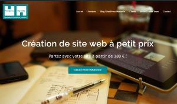
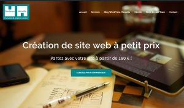

- Maitrise des processus et des outils
- Cycle en V et Scrum
- Profil technico fonctionnel
- Recueil des besoins, Cadrage et priorisation
- Relationnel client
- Aptitude remarquée à prioriser et organiser
- 27 rue Désirée Clary 13002 Marseille
- Fanny@kipik.com
- 06 62 49 62 26
- 47 ans, permis B, sans enfant
Compétences
Experiences professionelles
Digitick, Chef de projet Produit. Siège & direction technique, Marseille
Mars 2013 à aout 2016
Éditeur de logiciel spécialisé dans la e-billeterie de loisirs, spectacle & sport. Pilotage de 2 projets de plus de 1000 jours homme- Un tunnel d'achat indépendant en web services avec back office, en combinant les web services Digitick pour les entrées spéctacle et les Web services Availpro pour les reservations hôteilières. Analyses fontcionnelles, rédaction du cahier des charges, choix des prestataires, pilotage, formation.
- Un projet Interne : Phase 1/2 de la refonte du Site Digitick.com : Avant projet, définition, technos, cadrage, organisation, lancement du projet et pilotage
Pepsit, Eirl, AMO, ADT Alpes de Haute provence, Digne-les-bains
Novembre 2012 à mars 2013
Eirl Pepsit, Assistance à maîtrise d’ouvrage - Mise en place du système d’information touristique Opendata du département des Alpes de haute Provence.Montage du projet Yoga En Provence
Travel Technology Interactive, Product Manager. Siège & direction technique à Marseille
Août 2007 à mai 2012
Éditeur de logiciel spécialisé dans la gestion des compagnies aériennes.- Année 2009 à 2012
- Chef de produits BI & Online Payment.
- Assistance à la direction pour le suivi des clients, et des grands projets clients. Chef de projets supérieurs à 1000 jours homme : dont la garantie de l'integrité de données, et la mise en place d'une Datawharouse. Août 2007 à fin 2008
- Implémentations des nouveaux clients, zone AMEA, Amérique du Sud, Europe
IGA Voyages, Customer service coordinator, Aix les Milles
Août 2005 à août 2007
Éditeur de logiciel spécialisé dans la gestion des agences de voyage. Siège, Aix en provence Gestion des installations clients, gestion des demandes spécifiquesMon jardin numérique, formatrice, Marseille
Février 2004 à août 2005
Formation de seniors aux NTIC à Marseille. Développement de la structure : création des outils de gestion et de suivi des cours. Formations : supports et cours.IEIC (Institut Européen des Itinéraires Culturels), analyste, Luxembourg ville.
Février 2004 à août 2005
Analyse fonctionnelle et prototypage d’un espace de travail collaboratif pour la « mise en tourisme » des itinéraires. Obtention du 3è prix de l'innovation, organisé par L'INRIE (Fondation pour l'Innovation dans la Recherche Industrielle en Europe).Liebert-Hiross : Leader européen de l’air conditionné pour l’industrie. Siège social à Padoue, Italie
Janvier 2000 à juillet 2002
Conduite de projet « Hicom »: Intranet de création et de gestion d’offres online, en huit langues gérant 33000 références, intégration et gestion des prévisions des ventes des 10 filiales européennes
- 27 rue Désirée Clary 13002 Marseille
- Fanny@kipik.com
- 06 62 49 62 26
- 47 ans, permis B, sans enfant
Formation
Langues et culture
Logiciels et technos
Expérience professionnelle des jeunes années
Centre d'interets
Mes sites web
.jpg)
.jpg)
.jpg)
.jpg) 
